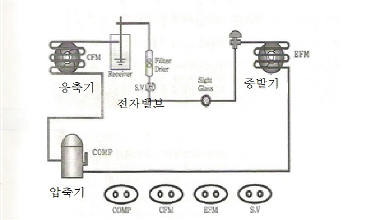

타이머에 의해 설정된 시간만큼 늦게 동작하는 회로.
동작은 늦지만 복귀는 타이머 코일과 함께 된다. PB1을 ON–OFF 조작하면
설정한 일정 시간 뒤에 부하가 동작.
일정시간동작타이머 T
일정 시간 동작 회로 (한시복귀)
일정 시간 동작 회로도 · 타임차트
동시에 동작하고 늦게 복귀되는 회로.
PB를 ON–OFF 조작함과 동시에 부하가 동작하고,
타이머의 시간 설정 후에 정지(복귀)한다.
💡 헷갈리지 마세요 — 지연동작 = 늦게 켜짐, 일정시간동작 = 동시에 켜지고 늦게 꺼짐.
② 표준 냉동 시스템 계통도
부품을 눌러 역할을 확인하세요. 냉매는 압축기 → 응축기 → 팽창밸브 → 증발기 순으로 순환합니다.
👆 부품을 눌러 보세요. 각 부품의 역할과 출력 단자 기호가 나옵니다.
실제 계통도 & 출력 단자

표준 냉동 시스템의 계통도
COMP압축기 모터의 출력 단자CFM응축기 팬 모터의 출력 단자EFM증발기 팬 모터의 출력 단자S.V냉동 실험 장치 주배관용 전자밸브 출력 단자
③ 안전
전기화재안전관리가스
전기화재 원인① 누전 ② 합선(단락) ③ 과전류 ④ 설비 노후 (※ 접지는 화재를 예방하는 것 — 원인 아님)안전관리 목적사고의 미연 방지가스 안전수칙비눗물로 누출 확인 · 이상 시 전문가 · 점화 확인 · 사용 전 냄새·환기 · 사용 후 밸브 잠금안전장치 취급작업 전 점검 · 결함 항상 점검 · 불량 시 즉시 수정 · 주의/통제사항 준수 (※ 부득이해도 임의 제거 금지)
준비됐나요? 위 🎮 게임으로 재미있게 익히고 📝 점검으로 확인해요.
게임으로 익히기
4가지 미니게임. 콤보를 이어 별 3개에 도전!
점검 — 졸업고사 대비
실제 졸업고사 유형을 바탕으로 만든 문제 은행(총 34문항)입니다. 한 번에 풀고 제출하면 점수·오답·해설을 확인할 수 있어요. 시간 제한은 없습니다.